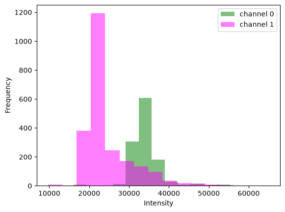
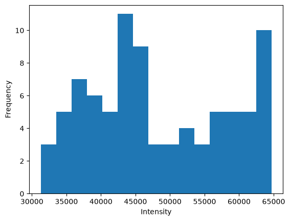

<!DOCTYPE html>


<html lang="en" data-content_root="../../../" >

  <head>
    <meta charset="utf-8" />
    <meta name="viewport" content="width=device-width, initial-scale=1.0" /><meta name="viewport" content="width=device-width, initial-scale=1" />

    <title>&lt;no title&gt; &#8212; BoBiAC Book</title>
  
  
  
  <script data-cfasync="false">
    document.documentElement.dataset.mode = localStorage.getItem("mode") || "";
    document.documentElement.dataset.theme = localStorage.getItem("theme") || "";
  </script>
  <!--
    this give us a css class that will be invisible only if js is disabled
  -->
  <noscript>
    <style>
      .pst-js-only { display: none !important; }

    </style>
  </noscript>
  
  <!-- Loaded before other Sphinx assets -->
  <link href="../../../_static/styles/theme.css?digest=8878045cc6db502f8baf" rel="stylesheet" />
<link href="../../../_static/styles/pydata-sphinx-theme.css?digest=8878045cc6db502f8baf" rel="stylesheet" />

    <link rel="stylesheet" type="text/css" href="../../../_static/pygments.css?v=03e43079" />
    <link rel="stylesheet" type="text/css" href="../../../_static/styles/sphinx-book-theme.css?v=3c74b3bc" />
    <link rel="stylesheet" type="text/css" href="../../../_static/togglebutton.css?v=9c3e77be" />
    <link rel="stylesheet" type="text/css" href="../../../_static/copybutton.css?v=76b2166b" />
    <link rel="stylesheet" type="text/css" href="../../../_static/mystnb.11b39860a7a0cbfd473a3ad8a317855267ff0bd372690045ca344a6b62be495e.css" />
    <link rel="stylesheet" type="text/css" href="../../../_static/sphinx-thebe.css?v=4fa983c6" />
    <link rel="stylesheet" type="text/css" href="../../../_static/sphinx-design.min.css?v=95c83b7e" />
    <link rel="stylesheet" type="text/css" href="../../../_static/styles/custom.css?v=db811428" />
  
  <!-- So that users can add custom icons -->
  <script src="../../../_static/scripts/fontawesome.js?digest=8878045cc6db502f8baf"></script>
  <!-- Pre-loaded scripts that we'll load fully later -->
  <link rel="preload" as="script" href="../../../_static/scripts/bootstrap.js?digest=8878045cc6db502f8baf" />
<link rel="preload" as="script" href="../../../_static/scripts/pydata-sphinx-theme.js?digest=8878045cc6db502f8baf" />

    <script src="../../../_static/documentation_options.js?v=9eb32ce0"></script>
    <script src="../../../_static/doctools.js?v=9a2dae69"></script>
    <script src="../../../_static/sphinx_highlight.js?v=dc90522c"></script>
    <script src="../../../_static/clipboard.min.js?v=a7894cd8"></script>
    <script src="../../../_static/copybutton.js?v=f281be69"></script>
    <script src="../../../_static/scripts/sphinx-book-theme.js?v=fab101a9"></script>
    <script>let toggleHintShow = 'Click to show';</script>
    <script>let toggleHintHide = 'Click to hide';</script>
    <script>let toggleOpenOnPrint = 'true';</script>
    <script src="../../../_static/togglebutton.js?v=b8b12719"></script>
    <script>var togglebuttonSelector = '.toggle, .admonition.dropdown';</script>
    <script src="../../../_static/design-tabs.js?v=f930bc37"></script>
    <script>const THEBE_JS_URL = "https://unpkg.com/thebe@0.8.2/lib/index.js"; const thebe_selector = ".thebe,.cell"; const thebe_selector_input = "pre"; const thebe_selector_output = ".output, .cell_output"</script>
    <script async="async" src="../../../_static/sphinx-thebe.js?v=c100c467"></script>
    <script>var togglebuttonSelector = '.toggle, .admonition.dropdown';</script>
    <script>const THEBE_JS_URL = "https://unpkg.com/thebe@0.8.2/lib/index.js"; const thebe_selector = ".thebe,.cell"; const thebe_selector_input = "pre"; const thebe_selector_output = ".output, .cell_output"</script>
    <script type="application/vnd.jupyter.widget-state+json">{"state": {"27ac30e7d58b4f0eb740f77b02594fef": {"model_module": "@jupyter-widgets/controls", "model_module_version": "2.0.0", "model_name": "HBoxModel", "state": {"_dom_classes": [], "_model_module": "@jupyter-widgets/controls", "_model_module_version": "2.0.0", "_model_name": "HBoxModel", "_view_count": null, "_view_module": "@jupyter-widgets/controls", "_view_module_version": "2.0.0", "_view_name": "HBoxView", "box_style": "", "children": ["IPY_MODEL_a01f0d7c4a454fd59acf60dbeedf798f", "IPY_MODEL_d978e94ae42442678d273f36d51c63b6", "IPY_MODEL_b498f7ff9442499fa0d7f4b941ae92ec"], "layout": "IPY_MODEL_7fb8c499272545fc9b21b8a28744c0df", "tabbable": null, "tooltip": null}}, "57b8daeac502443ea09dde200daa098f": {"model_module": "@jupyter-widgets/base", "model_module_version": "2.0.0", "model_name": "LayoutModel", "state": {"_model_module": "@jupyter-widgets/base", "_model_module_version": "2.0.0", "_model_name": "LayoutModel", "_view_count": null, "_view_module": "@jupyter-widgets/base", "_view_module_version": "2.0.0", "_view_name": "LayoutView", "align_content": null, "align_items": null, "align_self": null, "border_bottom": null, "border_left": null, "border_right": null, "border_top": null, "bottom": null, "display": null, "flex": null, "flex_flow": null, "grid_area": null, "grid_auto_columns": null, "grid_auto_flow": null, "grid_auto_rows": null, "grid_column": null, "grid_gap": null, "grid_row": null, "grid_template_areas": null, "grid_template_columns": null, "grid_template_rows": null, "height": null, "justify_content": null, "justify_items": null, "left": null, "margin": null, "max_height": null, "max_width": null, "min_height": null, "min_width": null, "object_fit": null, "object_position": null, "order": null, "overflow": null, "padding": null, "right": null, "top": null, "visibility": null, "width": null}}, "63f36024f08a4f5cad1cc10f2e6e792a": {"model_module": "@jupyter-widgets/controls", "model_module_version": "2.0.0", "model_name": "HTMLStyleModel", "state": {"_model_module": "@jupyter-widgets/controls", "_model_module_version": "2.0.0", "_model_name": "HTMLStyleModel", "_view_count": null, "_view_module": "@jupyter-widgets/base", "_view_module_version": "2.0.0", "_view_name": "StyleView", "background": null, "description_width": "", "font_size": null, "text_color": null}}, "7fb8c499272545fc9b21b8a28744c0df": {"model_module": "@jupyter-widgets/base", "model_module_version": "2.0.0", "model_name": "LayoutModel", "state": {"_model_module": "@jupyter-widgets/base", "_model_module_version": "2.0.0", "_model_name": "LayoutModel", "_view_count": null, "_view_module": "@jupyter-widgets/base", "_view_module_version": "2.0.0", "_view_name": "LayoutView", "align_content": null, "align_items": null, "align_self": null, "border_bottom": null, "border_left": null, "border_right": null, "border_top": null, "bottom": null, "display": null, "flex": null, "flex_flow": null, "grid_area": null, "grid_auto_columns": null, "grid_auto_flow": null, "grid_auto_rows": null, "grid_column": null, "grid_gap": null, "grid_row": null, "grid_template_areas": null, "grid_template_columns": null, "grid_template_rows": null, "height": null, "justify_content": null, "justify_items": null, "left": null, "margin": null, "max_height": null, "max_width": null, "min_height": null, "min_width": null, "object_fit": null, "object_position": null, "order": null, "overflow": null, "padding": null, "right": null, "top": null, "visibility": null, "width": null}}, "873c91fed06d4826859ca509d47e0558": {"model_module": "@jupyter-widgets/controls", "model_module_version": "2.0.0", "model_name": "HTMLStyleModel", "state": {"_model_module": "@jupyter-widgets/controls", "_model_module_version": "2.0.0", "_model_name": "HTMLStyleModel", "_view_count": null, "_view_module": "@jupyter-widgets/base", "_view_module_version": "2.0.0", "_view_name": "StyleView", "background": null, "description_width": "", "font_size": null, "text_color": null}}, "a01f0d7c4a454fd59acf60dbeedf798f": {"model_module": "@jupyter-widgets/controls", "model_module_version": "2.0.0", "model_name": "HTMLModel", "state": {"_dom_classes": [], "_model_module": "@jupyter-widgets/controls", "_model_module_version": "2.0.0", "_model_name": "HTMLModel", "_view_count": null, "_view_module": "@jupyter-widgets/controls", "_view_module_version": "2.0.0", "_view_name": "HTMLView", "description": "", "description_allow_html": false, "layout": "IPY_MODEL_57b8daeac502443ea09dde200daa098f", "placeholder": "\u200b", "style": "IPY_MODEL_63f36024f08a4f5cad1cc10f2e6e792a", "tabbable": null, "tooltip": null, "value": "Predicting\u2007channels:\u2007100%"}}, "b2d6fea7416a4100bab976d2a08b3e62": {"model_module": "@jupyter-widgets/base", "model_module_version": "2.0.0", "model_name": "LayoutModel", "state": {"_model_module": "@jupyter-widgets/base", "_model_module_version": "2.0.0", "_model_name": "LayoutModel", "_view_count": null, "_view_module": "@jupyter-widgets/base", "_view_module_version": "2.0.0", "_view_name": "LayoutView", "align_content": null, "align_items": null, "align_self": null, "border_bottom": null, "border_left": null, "border_right": null, "border_top": null, "bottom": null, "display": null, "flex": null, "flex_flow": null, "grid_area": null, "grid_auto_columns": null, "grid_auto_flow": null, "grid_auto_rows": null, "grid_column": null, "grid_gap": null, "grid_row": null, "grid_template_areas": null, "grid_template_columns": null, "grid_template_rows": null, "height": null, "justify_content": null, "justify_items": null, "left": null, "margin": null, "max_height": null, "max_width": null, "min_height": null, "min_width": null, "object_fit": null, "object_position": null, "order": null, "overflow": null, "padding": null, "right": null, "top": null, "visibility": null, "width": null}}, "b498f7ff9442499fa0d7f4b941ae92ec": {"model_module": "@jupyter-widgets/controls", "model_module_version": "2.0.0", "model_name": "HTMLModel", "state": {"_dom_classes": [], "_model_module": "@jupyter-widgets/controls", "_model_module_version": "2.0.0", "_model_name": "HTMLModel", "_view_count": null, "_view_module": "@jupyter-widgets/controls", "_view_module_version": "2.0.0", "_view_name": "HTMLView", "description": "", "description_allow_html": false, "layout": "IPY_MODEL_b2d6fea7416a4100bab976d2a08b3e62", "placeholder": "\u200b", "style": "IPY_MODEL_873c91fed06d4826859ca509d47e0558", "tabbable": null, "tooltip": null, "value": "\u20072/2\u2007[00:11&lt;00:00,\u2007\u20075.51s/it]"}}, "be4cfd67ac0046438b68dfbf27ea1a0a": {"model_module": "@jupyter-widgets/base", "model_module_version": "2.0.0", "model_name": "LayoutModel", "state": {"_model_module": "@jupyter-widgets/base", "_model_module_version": "2.0.0", "_model_name": "LayoutModel", "_view_count": null, "_view_module": "@jupyter-widgets/base", "_view_module_version": "2.0.0", "_view_name": "LayoutView", "align_content": null, "align_items": null, "align_self": null, "border_bottom": null, "border_left": null, "border_right": null, "border_top": null, "bottom": null, "display": null, "flex": null, "flex_flow": null, "grid_area": null, "grid_auto_columns": null, "grid_auto_flow": null, "grid_auto_rows": null, "grid_column": null, "grid_gap": null, "grid_row": null, "grid_template_areas": null, "grid_template_columns": null, "grid_template_rows": null, "height": null, "justify_content": null, "justify_items": null, "left": null, "margin": null, "max_height": null, "max_width": null, "min_height": null, "min_width": null, "object_fit": null, "object_position": null, "order": null, "overflow": null, "padding": null, "right": null, "top": null, "visibility": null, "width": null}}, "d978e94ae42442678d273f36d51c63b6": {"model_module": "@jupyter-widgets/controls", "model_module_version": "2.0.0", "model_name": "FloatProgressModel", "state": {"_dom_classes": [], "_model_module": "@jupyter-widgets/controls", "_model_module_version": "2.0.0", "_model_name": "FloatProgressModel", "_view_count": null, "_view_module": "@jupyter-widgets/controls", "_view_module_version": "2.0.0", "_view_name": "ProgressView", "bar_style": "success", "description": "", "description_allow_html": false, "layout": "IPY_MODEL_be4cfd67ac0046438b68dfbf27ea1a0a", "max": 2.0, "min": 0.0, "orientation": "horizontal", "style": "IPY_MODEL_d9bdf648b11b487bb5b1917be265fdbc", "tabbable": null, "tooltip": null, "value": 2.0}}, "d9bdf648b11b487bb5b1917be265fdbc": {"model_module": "@jupyter-widgets/controls", "model_module_version": "2.0.0", "model_name": "ProgressStyleModel", "state": {"_model_module": "@jupyter-widgets/controls", "_model_module_version": "2.0.0", "_model_name": "ProgressStyleModel", "_view_count": null, "_view_module": "@jupyter-widgets/base", "_view_module_version": "2.0.0", "_view_name": "StyleView", "bar_color": null, "description_width": ""}}}, "version_major": 2, "version_minor": 0}</script>
    <script crossorigin="anonymous" integrity="sha256-Ae2Vz/4ePdIu6ZyI/5ZGsYnb+m0JlOmKPjt6XZ9JJkA=" src="https://cdnjs.cloudflare.com/ajax/libs/require.js/2.3.4/require.min.js"></script>
    <script crossorigin="anonymous" data-jupyter-widgets-cdn="https://cdn.jsdelivr.net/npm/" src="https://cdn.jsdelivr.net/npm/@jupyter-widgets/html-manager@1.0.6/dist/embed-amd.js"></script>
    <script>DOCUMENTATION_OPTIONS.pagename = '.jupyter_cache/executed/1616d5aebe8b1553e9977a2b91409576/base';</script>
    <script src="../../../_static/scripts/custom.js?v=c465b8ac"></script>
    <link rel="index" title="Index" href="../../../genindex.html" />
    <link rel="search" title="Search" href="../../../search.html" />
  <meta name="viewport" content="width=device-width, initial-scale=1"/>
  <meta name="docsearch:language" content="en"/>
  <meta name="docsearch:version" content="" />
  </head>
  
  
  <body data-bs-spy="scroll" data-bs-target=".bd-toc-nav" data-offset="180" data-bs-root-margin="0px 0px -60%" data-default-mode="">

  
  
  <div id="pst-skip-link" class="skip-link d-print-none"><a href="#main-content">Skip to main content</a></div>
  
  <div id="pst-scroll-pixel-helper"></div>
  
  <button type="button" class="btn rounded-pill" id="pst-back-to-top">
    <i class="fa-solid fa-arrow-up"></i>Back to top</button>

  
  <dialog id="pst-search-dialog">
    
<form class="bd-search d-flex align-items-center"
      action="../../../search.html"
      method="get">
  <i class="fa-solid fa-magnifying-glass"></i>
  <input type="search"
         class="form-control"
         name="q"
         placeholder="Search this book..."
         aria-label="Search this book..."
         autocomplete="off"
         autocorrect="off"
         autocapitalize="off"
         spellcheck="false"/>
  <span class="search-button__kbd-shortcut"><kbd class="kbd-shortcut__modifier">Ctrl</kbd>+<kbd>K</kbd></span>
</form>
  </dialog>

  <div class="pst-async-banner-revealer d-none">
  <aside id="bd-header-version-warning" class="d-none d-print-none" aria-label="Version warning"></aside>
</div>

  
    <header class="bd-header navbar navbar-expand-lg bd-navbar d-print-none">
    </header>
  

  <div class="bd-container">
    <div class="bd-container__inner bd-page-width">
      
      
      
        
      
      <dialog id="pst-primary-sidebar-modal"></dialog>
      <div id="pst-primary-sidebar" class="bd-sidebar-primary bd-sidebar">
        

  
  <div class="sidebar-header-items sidebar-primary__section">
    
    
    
    
  </div>
  
    <div class="sidebar-primary-items__start sidebar-primary__section">
        <div class="sidebar-primary-item">

  
    
  

<a class="navbar-brand logo" href="../../../landing-page.html">
  
  
  
  
  
    
    
      
    
    
    
    
  
  
</a></div>
        <div class="sidebar-primary-item">

<button class="btn search-button-field search-button__button pst-js-only" title="Search" aria-label="Search" data-bs-placement="bottom" data-bs-toggle="tooltip">
 <i class="fa-solid fa-magnifying-glass"></i>
 <span class="search-button__default-text">Search</span>
 <span class="search-button__kbd-shortcut"><kbd class="kbd-shortcut__modifier">Ctrl</kbd>+<kbd class="kbd-shortcut__modifier">K</kbd></span>
</button></div>
        <div class="sidebar-primary-item"><nav class="bd-links bd-docs-nav" aria-label="Main">
    <div class="bd-toc-item navbar-nav active">
        
        <ul class="nav bd-sidenav bd-sidenav__home-link">
            <li class="toctree-l1">
                <a class="reference internal" href="../../../landing-page.html">
                    <i class="fas fa-home"></i> Home
                </a>
            </li>
        </ul>
        <p aria-level="2" class="caption" role="heading"><span class="caption-text">Course Material</span></p>
<ul class="nav bd-sidenav">
<li class="toctree-l1"><a class="reference internal" href="../../../content/00_intro_to_bobiac/bobiac_intro.html">00 - <i class="fas fa-laptop-code"></i> Introduction to BoBiAC</a></li>
<li class="toctree-l1 has-children"><a class="reference internal" href="../../../content/01_getting_started_with_python/python_landing_page.html">01 - <i class="fab fa-python"></i> Getting Started with Python</a><details><summary><span class="toctree-toggle" role="presentation"><i class="fa-solid fa-chevron-down"></i></span></summary><ul>
<li class="toctree-l2 has-children"><a class="reference internal" href="../../../content/01_getting_started_with_python/python_intro.html">Introduction to Python</a><details><summary><span class="toctree-toggle" role="presentation"><i class="fa-solid fa-chevron-down"></i></span></summary><ul>
<li class="toctree-l3"><a class="reference internal" href="../../../content/01_getting_started_with_python/getting_started_with_uv.html">Getting started with uv</a></li>
</ul>
</details></li>
<li class="toctree-l2"><a class="reference internal" href="../../../content/01_getting_started_with_python/jupyter_notebooks_and_juv.html">Jupyter Notebooks and juv</a></li>
<li class="toctree-l2"><a class="reference internal" href="../../../content/01_getting_started_with_python/glossary.html">Glossary</a></li>

</ul>
</details></li>
<li class="toctree-l1 has-children"><a class="reference internal" href="../../../content/02_python_basics/python_basics.html">02 - <i class="fab fa-python"></i> Python Basics</a><details><summary><span class="toctree-toggle" role="presentation"><i class="fa-solid fa-chevron-down"></i></span></summary><ul>
<li class="toctree-l2"><a class="reference internal" href="../../../content/02_python_basics/python_basics_notebook.html">The Python Basics Notebook</a></li>
<li class="toctree-l2"><a class="reference internal" href="../../../content/02_python_basics/error_notebook.html">Errors Everywhere</a></li>
</ul>
</details></li>
<li class="toctree-l1 has-children"><a class="reference internal" href="../../../content/03_digital_images_intro/digital_images_intro.html">03 - <i class="fas fa-table-cells"></i> Introduction to Digital Images</a><details><summary><span class="toctree-toggle" role="presentation"><i class="fa-solid fa-chevron-down"></i></span></summary><ul>
<li class="toctree-l2"><a class="reference internal" href="../../../content/03_digital_images_intro/working_with_bioimages_in_python.html">Working with Bioimages in Python</a></li>
</ul>
</details></li>
<li class="toctree-l1 has-children"><a class="reference internal" href="../../../content/04_segmentation/segmentation_intro.html">04 - <i class="fa-solid fa-disease"></i> Image Segmentation</a><details><summary><span class="toctree-toggle" role="presentation"><i class="fa-solid fa-chevron-down"></i></span></summary><ul>
<li class="toctree-l2 has-children"><a class="reference internal" href="../../../content/04_segmentation/classic/classic.html">Classical Methods</a><details><summary><span class="toctree-toggle" role="presentation"><i class="fa-solid fa-chevron-down"></i></span></summary><ul>
<li class="toctree-l3"><a class="reference internal" href="../../../content/04_segmentation/classic/classic_segmentation.html">Classical Segmentation</a></li>
</ul>
</details></li>
<li class="toctree-l2 has-children"><a class="reference internal" href="../../../content/04_segmentation/machine_learning/machine_learning.html">Machine Learning Methods</a><details><summary><span class="toctree-toggle" role="presentation"><i class="fa-solid fa-chevron-down"></i></span></summary><ul>
<li class="toctree-l3"><a class="reference internal" href="../../../content/04_segmentation/machine_learning/intro_to_ilastik.html">Introduction to Ilastik</a></li>
<li class="toctree-l3"><a class="reference internal" href="../../../content/04_segmentation/machine_learning/pixel_classification_with_ilastik.html">Ilastik for Pixel Classification</a></li>
<li class="toctree-l3"><a class="reference internal" href="../../../content/04_segmentation/machine_learning/from_ilastik_masks_to_labels.html">From Ilastik Masks to Labels</a></li>
</ul>
</details></li>
<li class="toctree-l2 has-children"><a class="reference internal" href="../../../content/04_segmentation/deep_learning/deep_learning.html">Deep Learning Methods</a><details><summary><span class="toctree-toggle" role="presentation"><i class="fa-solid fa-chevron-down"></i></span></summary><ul>
<li class="toctree-l3"><a class="reference internal" href="../../../content/04_segmentation/deep_learning/intro_to_cellpose.html">Introduction to Cellpose</a></li>
<li class="toctree-l3"><a class="reference internal" href="../../../content/04_segmentation/deep_learning/cellpose_notebook.html">Cellpose in Python</a></li>
<li class="toctree-l3"><a class="reference internal" href="../../../content/04_segmentation/deep_learning/cellpose_retraining.html">Retraining Cellpose on Custom Data</a></li>
</ul>
</details></li>
</ul>
</details></li>
<li class="toctree-l1 has-children"><a class="reference internal" href="../../../content/05_spot_detection/spot_detection_intro.html">05 - <i class="fa-solid fa-crosshairs"></i> Spot Detection</a><details><summary><span class="toctree-toggle" role="presentation"><i class="fa-solid fa-chevron-down"></i></span></summary><ul>
<li class="toctree-l2"><a class="reference internal" href="../../../content/05_spot_detection/intro_to_spotiflow.html">Introduction to Spotiflow</a></li>
<li class="toctree-l2"><a class="reference internal" href="../../../content/05_spot_detection/spotiflow_notebook.html">Spotiflow in Python</a></li>
<li class="toctree-l2"><a class="reference internal" href="../../../content/05_spot_detection/spotiflow_retraining.html">Finetuning or Training Spotiflow on Custom Data</a></li>
</ul>
</details></li>
<li class="toctree-l1 has-children"><a class="reference internal" href="../../../content/06_object_classification/object_classification.html">06 - <i class="fa-solid fa-shapes"></i> Object Classification</a><details><summary><span class="toctree-toggle" role="presentation"><i class="fa-solid fa-chevron-down"></i></span></summary><ul>
<li class="toctree-l2"><a class="reference internal" href="../../../content/06_object_classification/object_classification_with_ilastik.html">Ilastik for Object Classification</a></li>
</ul>
</details></li>
<li class="toctree-l1 has-children"><a class="reference internal" href="../../../content/07_measurement_and_quantification/measurement_and_quantification_intro.html">07 - <i class="fa-solid fa-chart-simple"></i> Measurements &amp; Quantification</a><details><summary><span class="toctree-toggle" role="presentation"><i class="fa-solid fa-chevron-down"></i></span></summary><ul>
<li class="toctree-l2"><a class="reference internal" href="../../../content/07_measurement_and_quantification/A_measurement_pipeline.html">Measurement Pipeline</a></li>
<li class="toctree-l2"><a class="reference internal" href="../../../content/07_measurement_and_quantification/B_nested_objects.html">Nested Measurements</a></li>
<li class="toctree-l2"><a class="reference internal" href="../../../content/07_measurement_and_quantification/background_correction_notebook.html">Background Correction</a></li>
</ul>
</details></li>
<li class="toctree-l1 has-children"><a class="reference internal" href="../../../content/08_colocalization/colocalization_intro.html">08 - <i class="fa-solid fa-location-crosshairs"></i> Colocalization</a><details><summary><span class="toctree-toggle" role="presentation"><i class="fa-solid fa-chevron-down"></i></span></summary><ul>
<li class="toctree-l2 has-children"><a class="reference internal" href="../../../content/08_colocalization/intensity_based/intensity_based_colocalization_intro.html">Intensity-based Colocalization</a><details><summary><span class="toctree-toggle" role="presentation"><i class="fa-solid fa-chevron-down"></i></span></summary><ul>
<li class="toctree-l3"><a class="reference internal" href="../../../content/08_colocalization/intensity_based/pixel_intensity_based_colocalization_pearsons.html">Pearson’s correlation coefficient</a></li>
<li class="toctree-l3"><a class="reference internal" href="../../../content/08_colocalization/intensity_based/pixel_intensity_based_colocalization_manders.html">Manders’ Colocalization Coefficients</a></li>
</ul>
</details></li>
<li class="toctree-l2 has-children"><a class="reference internal" href="../../../content/08_colocalization/spatial_statistics/spatial_stats_intro.html">Spatial Statistics</a><details><summary><span class="toctree-toggle" role="presentation"><i class="fa-solid fa-chevron-down"></i></span></summary><ul>
<li class="toctree-l3"><a class="reference internal" href="../../../content/08_colocalization/spatial_statistics/notebook_1.html">Notebook 1: Does a protein cluster?</a></li>
<li class="toctree-l3"><a class="reference internal" href="../../../content/08_colocalization/spatial_statistics/notebook_2.html">Notebook 2: Do two different protein clusters co-localize?</a></li>
<li class="toctree-l3"><a class="reference internal" href="../../../content/08_colocalization/spatial_statistics/notebook_3.html">Notebook 3: Does a protein localize to a cellular compartment?</a></li>
</ul>
</details></li>
</ul>
</details></li>
</ul>
<p aria-level="2" class="caption" role="heading"><span class="caption-text">BoBiAC Exercises</span></p>
<ul class="nav bd-sidenav">
<li class="toctree-l1 has-children"><a class="reference internal" href="../../../content/09_bobiac_exercises/bobiac_exercises.html">BoBiAC Exercises</a><details><summary><span class="toctree-toggle" role="presentation"><i class="fa-solid fa-chevron-down"></i></span></summary><ul>
<li class="toctree-l2"><a class="reference internal" href="../../../content/09_bobiac_exercises/uv.html">uv Exercises</a></li>
<li class="toctree-l2"><a class="reference internal" href="../../../content/09_bobiac_exercises/juv.html">juv Exercises</a></li>
<li class="toctree-l2"><a class="reference internal" href="../../../content/09_bobiac_exercises/working_with_bioimages.html">Working with Bioimages</a></li>
<li class="toctree-l2"><a class="reference internal" href="../../../content/09_bobiac_exercises/classic_segmentation.html">Classic Segmentation</a></li>
<li class="toctree-l2"><a class="reference internal" href="../../../content/09_bobiac_exercises/group_work_1.html">Group Work 1</a></li>
</ul>
</details></li>
</ul>
<p aria-level="2" class="caption" role="heading"><span class="caption-text">Course Materials Downloads</span></p>
<ul class="nav bd-sidenav">
<li class="toctree-l1"><a class="reference internal" href="../../../data/course_downloads.html"><i class="fa-solid fa-folder"></i> Downloads</a></li>
</ul>
<p aria-level="2" class="caption" role="heading"><span class="caption-text">Links</span></p>
<ul class="nav bd-sidenav">
<li class="toctree-l1"><a class="reference external" href="https://bobiac.github.io">BoBiAC</a></li>
<li class="toctree-l1"><a class="reference external" href="https://docs.astral.sh/uv/">uv</a></li>
<li class="toctree-l1"><a class="reference external" href="https://github.com/manzt/juv">juv</a></li>
<li class="toctree-l1"><a class="reference external" href="https://github.com/fdrgsp/pyrunner">pyrunner</a></li>
<li class="toctree-l1"><a class="reference external" href="https://cite.hms.harvard.edu">Core for Imaging Technology &amp; Education (CITE)</a></li>
</ul>
<p aria-level="2" class="caption" role="heading"><span class="caption-text">Past Editions</span></p>
<ul class="nav bd-sidenav">
<li class="toctree-l1"><a class="reference external" href="https://bobiac.github.io/bobiac-book/2025/">2025 Edition</a></li>
</ul>
<p aria-level="2" class="caption" role="heading"><span class="caption-text">Contributors</span></p>
<ul class="nav bd-sidenav">
<li class="toctree-l1"><a class="reference external" href="https://www.linkedin.com/in/federicogasparoli">Federico Gasparoli, PhD</a></li>
<li class="toctree-l1"><a class="reference external" href="https://www.linkedin.com/in/eva-de-la-serna-b1a69664">Eva de la Serna, PhD</a></li>
<li class="toctree-l1"><a class="reference external" href="https://orcid.org/0000-0001-6194-9568">Max Brambach, PhD</a></li>
<li class="toctree-l1"><a class="reference external" href="https://www.linkedin.com/in/amelie-andreas-542b93204">Amelie Andreas</a></li>
</ul>

    </div>
</nav></div>
    </div>
  
  
  <div class="sidebar-primary-items__end sidebar-primary__section">
      <div class="sidebar-primary-item">
<div id="ethical-ad-placement"
      class="flat"
      data-ea-publisher="readthedocs"
      data-ea-type="readthedocs-sidebar"
      data-ea-manual="true">
</div></div>
  </div>


      </div>
      
      <main id="main-content" class="bd-main" role="main">
        
        

<div class="sbt-scroll-pixel-helper"></div>

          <div class="bd-content">
            <div class="bd-article-container">
              
              <div class="bd-header-article d-print-none">
<div class="header-article-items header-article__inner">
  
    <div class="header-article-items__start">
      
        <div class="header-article-item"><button class="sidebar-toggle primary-toggle btn btn-sm" title="Toggle primary sidebar" data-bs-placement="bottom" data-bs-toggle="tooltip">
  <span class="fa-solid fa-bars"></span>
</button></div>
      
    </div>
  
  
    <div class="header-article-items__end">
      
        <div class="header-article-item">

<div class="article-header-buttons">


<a href="https://github.com/bobiac/bobiac-book" target="_blank"
   class="btn btn-sm btn-source-repository-button"
   title="Source repository"
   data-bs-placement="bottom" data-bs-toggle="tooltip"
>
  

<span class="btn__icon-container">
  <i class="fab fa-github"></i>
  </span>

</a>


<button onclick="toggleFullScreen()"
  class="btn btn-sm btn-fullscreen-button pst-navbar-icon"
  title="Fullscreen mode"
  data-bs-placement="bottom" data-bs-toggle="tooltip"
>
  

<span class="btn__icon-container">
  <i class="fas fa-expand"></i>
  </span>

</button>


<button class="btn btn-sm nav-link pst-navbar-icon theme-switch-button pst-js-only" aria-label="Color mode" data-bs-title="Color mode"  data-bs-placement="bottom" data-bs-toggle="tooltip">
  <i class="theme-switch fa-solid fa-sun                fa-lg" data-mode="light" title="Light"></i>
  <i class="theme-switch fa-solid fa-moon               fa-lg" data-mode="dark"  title="Dark"></i>
  <i class="theme-switch fa-solid fa-circle-half-stroke fa-lg" data-mode="auto"  title="System Settings"></i>
</button>


<button class="btn btn-sm pst-navbar-icon search-button search-button__button pst-js-only" title="Search" aria-label="Search" data-bs-placement="bottom" data-bs-toggle="tooltip">
    <i class="fa-solid fa-magnifying-glass fa-lg"></i>
</button>
<button class="sidebar-toggle secondary-toggle btn btn-sm pst-navbar-icon" title="Toggle secondary sidebar" data-bs-placement="bottom" data-bs-toggle="tooltip">
    <span class="fa-solid fa-list"></span>
</button>
</div></div>
      
    </div>
  
</div>
</div>
              
              

<div id="jb-print-docs-body" class="onlyprint">
    <h1><no title></h1>
    <!-- Table of contents -->
    <div id="print-main-content">
        <div id="jb-print-toc">
            
            <div>
                <h2> Contents </h2>
            </div>
            <nav aria-label="Page">
                <ul class="simple visible nav section-nav flex-column">
</ul>

            </nav>
        </div>
    </div>
</div>

              
                
<div id="searchbox"></div>
                <article class="bd-article">
                  
  <div class="cell docutils container">
<div class="cell_input docutils container">
<div class="highlight-ipython3 notranslate"><div class="highlight"><pre><span></span><span class="c1"># /// script</span>
<span class="c1"># requires-python = &quot;&gt;=3.12&quot;</span>
<span class="c1"># dependencies = [</span>
<span class="c1">#     &quot;matplotlib&quot;,</span>
<span class="c1">#     &quot;tifffile&quot;,</span>
<span class="c1">#     &quot;spotiflow&quot;,</span>
<span class="c1">#     &quot;tqdm&quot;,</span>
<span class="c1">#     &quot;napari[all]&quot;</span>
<span class="c1"># ]</span>
<span class="c1"># ///</span>
</pre></div>
</div>
</div>
</div>
<div class="cell docutils container">
<div class="cell_input docutils container">
<div class="highlight-ipython3 notranslate"><div class="highlight"><pre><span></span><span class="kn">import</span><span class="w"> </span><span class="nn">csv</span>
<span class="kn">from</span><span class="w"> </span><span class="nn">pathlib</span><span class="w"> </span><span class="kn">import</span> <span class="n">Path</span>

<span class="kn">import</span><span class="w"> </span><span class="nn">matplotlib.pyplot</span><span class="w"> </span><span class="k">as</span><span class="w"> </span><span class="nn">plt</span>
<span class="kn">import</span><span class="w"> </span><span class="nn">napari</span>
<span class="kn">import</span><span class="w"> </span><span class="nn">numpy</span><span class="w"> </span><span class="k">as</span><span class="w"> </span><span class="nn">np</span>
<span class="kn">import</span><span class="w"> </span><span class="nn">tifffile</span>
<span class="kn">from</span><span class="w"> </span><span class="nn">spotiflow.model</span><span class="w"> </span><span class="kn">import</span> <span class="n">Spotiflow</span>
<span class="kn">from</span><span class="w"> </span><span class="nn">tqdm</span><span class="w"> </span><span class="kn">import</span> <span class="n">tqdm</span>
</pre></div>
</div>
</div>
</div>
<div class="cell tag_hide-input docutils container">
<details class="admonition hide above-input">
<summary aria-label="Toggle hidden content">
<p class="collapsed admonition-title">Show code cell source</p>
<p class="expanded admonition-title">Hide code cell source</p>
</summary>
<div class="cell_input docutils container">
<div class="highlight-ipython3 notranslate"><div class="highlight"><pre><span></span><span class="k">def</span><span class="w"> </span><span class="nf">save_points_as_csv</span><span class="p">(</span><span class="n">points</span><span class="p">,</span> <span class="n">output_path</span><span class="o">=</span><span class="s2">&quot;points.csv&quot;</span><span class="p">,</span> <span class="n">channel_last</span><span class="o">=</span><span class="kc">False</span><span class="p">)</span> <span class="o">-&gt;</span> <span class="kc">None</span><span class="p">:</span>
<span class="w">    </span><span class="sd">&quot;&quot;&quot;Save points as a napari-compatible CSV (drag-and-drop as Points layer).</span>

<span class="sd">    napari maps the CSV columns (axis-0, axis-1, ...) to the layer axes in order.</span>
<span class="sd">    `predict_multichannel` returns the channel as the *last* column (e.g. (y, x, channel)),</span>
<span class="sd">    so set `channel_last=True` to move it to the front (e.g. (channel, y, x)) and have the</span>
<span class="sd">    spots line up with a channel-first (C, ...) image in napari.</span>
<span class="sd">    &quot;&quot;&quot;</span>
    <span class="n">points</span> <span class="o">=</span> <span class="n">np</span><span class="o">.</span><span class="n">asarray</span><span class="p">(</span><span class="n">points</span><span class="p">)</span>
    <span class="k">if</span> <span class="n">channel_last</span><span class="p">:</span>
        <span class="c1"># move the last column (channel) to the front</span>
        <span class="n">points</span> <span class="o">=</span> <span class="n">points</span><span class="p">[:,</span> <span class="p">[</span><span class="o">-</span><span class="mi">1</span><span class="p">,</span> <span class="o">*</span><span class="nb">range</span><span class="p">(</span><span class="n">points</span><span class="o">.</span><span class="n">shape</span><span class="p">[</span><span class="mi">1</span><span class="p">]</span> <span class="o">-</span> <span class="mi">1</span><span class="p">)]]</span>
    <span class="n">ndim</span> <span class="o">=</span> <span class="n">points</span><span class="o">.</span><span class="n">shape</span><span class="p">[</span><span class="mi">1</span><span class="p">]</span>
    <span class="n">headers</span> <span class="o">=</span> <span class="p">[</span><span class="s2">&quot;index&quot;</span><span class="p">]</span> <span class="o">+</span> <span class="p">[</span><span class="sa">f</span><span class="s2">&quot;axis-</span><span class="si">{</span><span class="n">i</span><span class="si">}</span><span class="s2">&quot;</span> <span class="k">for</span> <span class="n">i</span> <span class="ow">in</span> <span class="nb">range</span><span class="p">(</span><span class="n">ndim</span><span class="p">)]</span>
    <span class="k">with</span> <span class="nb">open</span><span class="p">(</span><span class="n">output_path</span><span class="p">,</span> <span class="s2">&quot;w&quot;</span><span class="p">,</span> <span class="n">newline</span><span class="o">=</span><span class="s2">&quot;&quot;</span><span class="p">)</span> <span class="k">as</span> <span class="n">f</span><span class="p">:</span>
        <span class="n">writer</span> <span class="o">=</span> <span class="n">csv</span><span class="o">.</span><span class="n">writer</span><span class="p">(</span><span class="n">f</span><span class="p">)</span>
        <span class="n">writer</span><span class="o">.</span><span class="n">writerow</span><span class="p">(</span><span class="n">headers</span><span class="p">)</span>
        <span class="k">for</span> <span class="n">i</span><span class="p">,</span> <span class="n">p</span> <span class="ow">in</span> <span class="nb">enumerate</span><span class="p">(</span><span class="n">points</span><span class="p">):</span>
            <span class="n">writer</span><span class="o">.</span><span class="n">writerow</span><span class="p">([</span><span class="n">i</span><span class="p">,</span> <span class="o">*</span><span class="n">p</span><span class="p">])</span>
</pre></div>
</div>
</div>
</details>
</div>
<div class="cell tag_teacher docutils container">
<div class="cell_input docutils container">
<div class="highlight-ipython3 notranslate"><div class="highlight"><pre><span></span><span class="n">image_path</span> <span class="o">=</span> <span class="s2">&quot;../../_static/images/spotiflow/2d_spots.tif&quot;</span>
<span class="n">image</span> <span class="o">=</span> <span class="n">tifffile</span><span class="o">.</span><span class="n">imread</span><span class="p">(</span><span class="n">image_path</span><span class="p">)</span>
</pre></div>
</div>
</div>
</div>
<div class="cell tag_teacher docutils container">
<div class="cell_input docutils container">
<div class="highlight-ipython3 notranslate"><div class="highlight"><pre><span></span><span class="nb">print</span><span class="p">(</span><span class="n">image</span><span class="o">.</span><span class="n">shape</span><span class="p">)</span>
</pre></div>
</div>
</div>
<div class="cell_output docutils container">
<div class="output stream highlight-myst-ansi notranslate"><div class="highlight"><pre><span></span>(5, 1040, 1392)
</pre></div>
</div>
</div>
</div>
<div class="cell tag_skip-execution docutils container">
<div class="cell_input docutils container">
<div class="highlight-ipython3 notranslate"><div class="highlight"><pre><span></span><span class="n">viewer</span> <span class="o">=</span> <span class="n">napari</span><span class="o">.</span><span class="n">Viewer</span><span class="p">()</span>
<span class="n">viewer</span><span class="o">.</span><span class="n">add_image</span><span class="p">(</span><span class="n">image</span><span class="p">,</span> <span class="n">name</span><span class="o">=</span><span class="s2">&quot;Image&quot;</span><span class="p">)</span>
</pre></div>
</div>
</div>
</div>
<div class="cell tag_teacher docutils container">
<div class="cell_input docutils container">
<div class="highlight-ipython3 notranslate"><div class="highlight"><pre><span></span><span class="n">model</span> <span class="o">=</span> <span class="n">Spotiflow</span><span class="o">.</span><span class="n">from_pretrained</span><span class="p">(</span><span class="s2">&quot;general&quot;</span><span class="p">)</span>
</pre></div>
</div>
</div>
<div class="cell_output docutils container">
<div class="output stream highlight-myst-ansi notranslate"><div class="highlight"><pre><span></span>INFO:spotiflow.model.spotiflow:Loading pretrained model: general
</pre></div>
</div>
<div class="output stream highlight-myst-ansi notranslate"><div class="highlight"><pre><span></span>Downloading data from https://github.com/weigertlab/spotiflow-models/releases/download/0.6.0/general.zip to /home/runner/.spotiflow/models/general.zip
</pre></div>
</div>
<div class="output stream highlight-myst-ansi notranslate"><div class="highlight"><pre><span></span>       0/87885382 [..............................] - ETA: 0s
 5496832/87885382 [&gt;.............................] - ETA: 0s
10493952/87885382 [==&gt;...........................] - ETA: 1s
</pre></div>
</div>
<div class="output stream highlight-myst-ansi notranslate"><div class="highlight"><pre><span></span>
13697024/87885382 [===&gt;..........................] - ETA: 1s
16793600/87885382 [====&gt;.........................] - ETA: 1s
19857408/87885382 [=====&gt;........................] - ETA: 1s
20979712/87885382 [======&gt;.......................] - ETA: 1s
</pre></div>
</div>
<div class="output stream highlight-myst-ansi notranslate"><div class="highlight"><pre><span></span>
24002560/87885382 [=======&gt;......................] - ETA: 1s
24920064/87885382 [=======&gt;......................] - ETA: 1s
26001408/87885382 [=======&gt;......................] - ETA: 1s
26509312/87885382 [========&gt;.....................] - ETA: 1s
</pre></div>
</div>
<div class="output stream highlight-myst-ansi notranslate"><div class="highlight"><pre><span></span>
28033024/87885382 [========&gt;.....................] - ETA: 1s
31014912/87885382 [=========&gt;....................] - ETA: 1s
31465472/87885382 [=========&gt;....................] - ETA: 1s
</pre></div>
</div>
<div class="output stream highlight-myst-ansi notranslate"><div class="highlight"><pre><span></span>
35405824/87885382 [===========&gt;..................] - ETA: 1s
39239680/87885382 [============&gt;.................] - ETA: 1s
41951232/87885382 [=============&gt;................] - ETA: 1s
</pre></div>
</div>
<div class="output stream highlight-myst-ansi notranslate"><div class="highlight"><pre><span></span>
44048384/87885382 [==============&gt;...............] - ETA: 1s
44843008/87885382 [==============&gt;...............] - ETA: 1s
46317568/87885382 [==============&gt;...............] - ETA: 1s
47792128/87885382 [===============&gt;..............] - ETA: 1s
</pre></div>
</div>
<div class="output stream highlight-myst-ansi notranslate"><div class="highlight"><pre><span></span>
49250304/87885382 [===============&gt;..............] - ETA: 1s
51396608/87885382 [================&gt;.............] - ETA: 1s
52436992/87885382 [================&gt;.............] - ETA: 1s
</pre></div>
</div>
<div class="output stream highlight-myst-ansi notranslate"><div class="highlight"><pre><span></span>
58114048/87885382 [==================&gt;...........] - ETA: 0s
60948480/87885382 [===================&gt;..........] - ETA: 0s
62922752/87885382 [====================&gt;.........] - ETA: 0s
</pre></div>
</div>
<div class="output stream highlight-myst-ansi notranslate"><div class="highlight"><pre><span></span>
65568768/87885382 [=====================&gt;........] - ETA: 0s
68272128/87885382 [======================&gt;.......] - ETA: 0s
71155712/87885382 [=======================&gt;......] - ETA: 0s
</pre></div>
</div>
<div class="output stream highlight-myst-ansi notranslate"><div class="highlight"><pre><span></span>
73408512/87885382 [========================&gt;.....] - ETA: 0s
77250560/87885382 [=========================&gt;....] - ETA: 0s
81100800/87885382 [==========================&gt;...] - ETA: 0s
</pre></div>
</div>
<div class="output stream highlight-myst-ansi notranslate"><div class="highlight"><pre><span></span>
83894272/87885382 [===========================&gt;..] - ETA: 0s
87885382/87885382 [==============================] - 2s 0us/step
</pre></div>
</div>
</div>
</div>
<div class="cell tag_teacher docutils container">
<div class="cell_input docutils container">
<div class="highlight-ipython3 notranslate"><div class="highlight"><pre><span></span><span class="n">tr_image</span> <span class="o">=</span> <span class="n">image</span><span class="o">.</span><span class="n">transpose</span><span class="p">(</span><span class="mi">1</span><span class="p">,</span> <span class="mi">2</span><span class="p">,</span> <span class="mi">0</span><span class="p">)</span>  <span class="c1"># (C, Y, X) -&gt; (Y, X, C)</span>
<span class="nb">print</span><span class="p">(</span><span class="n">tr_image</span><span class="o">.</span><span class="n">shape</span><span class="p">)</span>
</pre></div>
</div>
</div>
<div class="cell_output docutils container">
<div class="output stream highlight-myst-ansi notranslate"><div class="highlight"><pre><span></span>(1040, 1392, 5)
</pre></div>
</div>
</div>
</div>
<div class="cell docutils container">
<div class="cell_input docutils container">
<div class="highlight-ipython3 notranslate"><div class="highlight"><pre><span></span><span class="n">points</span><span class="p">,</span> <span class="n">details</span> <span class="o">=</span> <span class="n">model</span><span class="o">.</span><span class="n">predict_multichannel</span><span class="p">(</span><span class="n">tr_image</span><span class="p">,</span> <span class="n">channels</span><span class="o">=</span><span class="p">(</span><span class="mi">2</span><span class="p">,</span> <span class="mi">3</span><span class="p">))</span>
</pre></div>
</div>
</div>
<div class="cell_output docutils container">
<div class="output stream highlight-myst-ansi notranslate"><div class="highlight"><pre><span></span>INFO:spotiflow.model.spotiflow:Data is assumed to be in channel-last format ((Z)YXC).
</pre></div>
</div>
<script type="application/vnd.jupyter.widget-view+json">{"model_id": "27ac30e7d58b4f0eb740f77b02594fef", "version_major": 2, "version_minor": 0}</script></div>
</div>
<div class="cell tag_teacher docutils container">
<div class="cell_input docutils container">
<div class="highlight-ipython3 notranslate"><div class="highlight"><pre><span></span><span class="nb">print</span><span class="p">(</span><span class="n">points</span><span class="o">.</span><span class="n">shape</span><span class="p">)</span>
</pre></div>
</div>
</div>
<div class="cell_output docutils container">
<div class="output stream highlight-myst-ansi notranslate"><div class="highlight"><pre><span></span>(3505, 3)
</pre></div>
</div>
</div>
</div>
<div class="cell tag_teacher docutils container">
<div class="cell_input docutils container">
<div class="highlight-ipython3 notranslate"><div class="highlight"><pre><span></span><span class="nb">print</span><span class="p">(</span><span class="n">points</span><span class="p">[</span><span class="mi">0</span><span class="p">])</span>
</pre></div>
</div>
</div>
<div class="cell_output docutils container">
<div class="output stream highlight-myst-ansi notranslate"><div class="highlight"><pre><span></span>[1029.48552567  302.4604007     2.        ]
</pre></div>
</div>
</div>
</div>
<div class="cell tag_skip-execution docutils container">
<div class="cell_input docutils container">
<div class="highlight-ipython3 notranslate"><div class="highlight"><pre><span></span><span class="c1"># optional if you did close the viewer we previously created</span>
<span class="c1"># viewer = napari.Viewer()</span>
<span class="c1"># viewer.add_image(image, name=&quot;Image&quot;)</span>

<span class="c1"># we need to reorder the points coordinates as we have them in the (yxc) format and napari needs (cyx)</span>
<span class="n">points_napari</span> <span class="o">=</span> <span class="n">points</span><span class="p">[:,</span> <span class="p">[</span><span class="mi">2</span><span class="p">,</span> <span class="mi">0</span><span class="p">,</span> <span class="mi">1</span><span class="p">]]</span>  <span class="c1"># (y, x, channel) -&gt; (channel, y, x)</span>
<span class="n">viewer</span><span class="o">.</span><span class="n">add_points</span><span class="p">(</span>
    <span class="n">points_napari</span><span class="p">,</span>
    <span class="n">name</span><span class="o">=</span><span class="s2">&quot;Points&quot;</span><span class="p">,</span>
    <span class="n">face_color</span><span class="o">=</span><span class="s2">&quot;green&quot;</span><span class="p">,</span>
    <span class="n">border_color</span><span class="o">=</span><span class="s2">&quot;green&quot;</span><span class="p">,</span>
    <span class="n">size</span><span class="o">=</span><span class="mi">4</span><span class="p">,</span>
    <span class="n">symbol</span><span class="o">=</span><span class="s2">&quot;x&quot;</span><span class="p">,</span>
<span class="p">)</span>
</pre></div>
</div>
</div>
</div>
<div class="cell tag_skip-execution docutils container">
<div class="cell_input docutils container">
<div class="highlight-ipython3 notranslate"><div class="highlight"><pre><span></span><span class="n">save_points_as_csv</span><span class="p">(</span><span class="n">points</span><span class="p">,</span> <span class="s2">&quot;2d_points.csv&quot;</span><span class="p">,</span> <span class="n">channel_last</span><span class="o">=</span><span class="kc">True</span><span class="p">)</span>
</pre></div>
</div>
</div>
</div>
<div class="cell tag_skip-execution docutils container">
<div class="cell_input docutils container">
<div class="highlight-ipython3 notranslate"><div class="highlight"><pre><span></span><span class="c1"># `ch` is channel index, change it to visualize the heatmap of a different channel.</span>
<span class="c1"># note that this is the channel index as passed to predict_multichannel().</span>
<span class="n">ch</span> <span class="o">=</span> <span class="mi">1</span>

<span class="c1"># optional if you did close the viewer we previously created</span>
<span class="c1"># viewer = napari.Viewer()</span>
<span class="n">viewer</span><span class="o">.</span><span class="n">add_image</span><span class="p">(</span><span class="n">details</span><span class="p">[</span><span class="n">ch</span><span class="p">]</span><span class="o">.</span><span class="n">heatmap</span><span class="p">,</span> <span class="n">name</span><span class="o">=</span><span class="sa">f</span><span class="s2">&quot;Heatmap (Channel </span><span class="si">{</span><span class="n">ch</span><span class="si">}</span><span class="s2">)&quot;</span><span class="p">,</span> <span class="n">colormap</span><span class="o">=</span><span class="s2">&quot;magma&quot;</span><span class="p">)</span>
</pre></div>
</div>
</div>
</div>
<div class="cell tag_teacher docutils container">
<div class="cell_input docutils container">
<div class="highlight-ipython3 notranslate"><div class="highlight"><pre><span></span><span class="n">plt</span><span class="o">.</span><span class="n">hist</span><span class="p">(</span><span class="n">details</span><span class="p">[</span><span class="mi">0</span><span class="p">]</span><span class="o">.</span><span class="n">intens</span><span class="p">,</span> <span class="n">bins</span><span class="o">=</span><span class="mi">15</span><span class="p">,</span> <span class="n">color</span><span class="o">=</span><span class="s2">&quot;green&quot;</span><span class="p">,</span> <span class="n">alpha</span><span class="o">=</span><span class="mf">0.5</span><span class="p">,</span> <span class="n">label</span><span class="o">=</span><span class="s2">&quot;channel 0&quot;</span><span class="p">)</span>
<span class="n">plt</span><span class="o">.</span><span class="n">hist</span><span class="p">(</span><span class="n">details</span><span class="p">[</span><span class="mi">1</span><span class="p">]</span><span class="o">.</span><span class="n">intens</span><span class="p">,</span> <span class="n">bins</span><span class="o">=</span><span class="mi">15</span><span class="p">,</span> <span class="n">color</span><span class="o">=</span><span class="s2">&quot;magenta&quot;</span><span class="p">,</span> <span class="n">alpha</span><span class="o">=</span><span class="mf">0.5</span><span class="p">,</span> <span class="n">label</span><span class="o">=</span><span class="s2">&quot;channel 1&quot;</span><span class="p">)</span>
<span class="n">plt</span><span class="o">.</span><span class="n">xlabel</span><span class="p">(</span><span class="s2">&quot;Intensity&quot;</span><span class="p">)</span>
<span class="n">plt</span><span class="o">.</span><span class="n">ylabel</span><span class="p">(</span><span class="s2">&quot;Frequency&quot;</span><span class="p">)</span>
<span class="n">plt</span><span class="o">.</span><span class="n">legend</span><span class="p">()</span>
<span class="n">plt</span><span class="o">.</span><span class="n">show</span><span class="p">()</span>
</pre></div>
</div>
</div>
<div class="cell_output docutils container">

</div>
</div>
<div class="cell tag_skip-execution docutils container">
<div class="cell_input docutils container">
<div class="highlight-ipython3 notranslate"><div class="highlight"><pre><span></span><span class="c1"># Path to the folder containing the images</span>
<span class="n">folder_path</span> <span class="o">=</span> <span class="n">Path</span><span class="p">(</span><span class="s2">&quot;data/05_spot_detection/&quot;</span><span class="p">)</span>  <span class="c1"># change this to your folder path</span>

<span class="c1"># Get the sorted list of all .tif images in the folder</span>
<span class="n">images_path</span> <span class="o">=</span> <span class="nb">sorted</span><span class="p">(</span><span class="n">folder_path</span><span class="o">.</span><span class="n">glob</span><span class="p">(</span><span class="s2">&quot;*.tif&quot;</span><span class="p">))</span>

<span class="c1"># Initialize the model once before the loop</span>
<span class="n">model</span> <span class="o">=</span> <span class="n">Spotiflow</span><span class="o">.</span><span class="n">from_pretrained</span><span class="p">(</span><span class="s2">&quot;general&quot;</span><span class="p">)</span>

<span class="c1"># specify the channels you want to process in predict_multichannel()</span>
<span class="n">channels</span> <span class="o">=</span> <span class="p">(</span><span class="mi">2</span><span class="p">,</span> <span class="mi">3</span><span class="p">)</span>

<span class="c1"># NOTE: tqdm is used to show a progress bar, but you can remove it if you don&#39;t want it</span>
<span class="k">for</span> <span class="n">image_path</span> <span class="ow">in</span> <span class="n">tqdm</span><span class="p">(</span><span class="n">images_path</span><span class="p">,</span> <span class="n">desc</span><span class="o">=</span><span class="s2">&quot;Processing images&quot;</span><span class="p">):</span>
    <span class="c1"># Load the image</span>
    <span class="n">image</span> <span class="o">=</span> <span class="n">tifffile</span><span class="o">.</span><span class="n">imread</span><span class="p">(</span><span class="n">image_path</span><span class="p">)</span>
    <span class="c1"># Transpose the image to channel-last format for `predict_multichannel`</span>
    <span class="n">tr_image</span> <span class="o">=</span> <span class="n">image</span><span class="o">.</span><span class="n">transpose</span><span class="p">(</span><span class="mi">1</span><span class="p">,</span> <span class="mi">2</span><span class="p">,</span> <span class="mi">0</span><span class="p">)</span>  <span class="c1"># (C, Y, X) -&gt; (Y, X, C)</span>
    <span class="c1"># Run Spotiflow on the image</span>
    <span class="n">points</span><span class="p">,</span> <span class="n">details</span> <span class="o">=</span> <span class="n">model</span><span class="o">.</span><span class="n">predict_multichannel</span><span class="p">(</span><span class="n">tr_image</span><span class="p">,</span> <span class="n">channels</span><span class="o">=</span><span class="n">channels</span><span class="p">)</span>
    <span class="c1"># Save the points as a CSV file</span>
    <span class="n">output_path</span> <span class="o">=</span> <span class="n">folder_path</span> <span class="o">/</span> <span class="sa">f</span><span class="s2">&quot;</span><span class="si">{</span><span class="n">image_path</span><span class="o">.</span><span class="n">stem</span><span class="si">}</span><span class="s2">_points.csv&quot;</span>
    <span class="n">save_points_as_csv</span><span class="p">(</span><span class="n">points</span><span class="p">,</span> <span class="nb">str</span><span class="p">(</span><span class="n">output_path</span><span class="p">),</span> <span class="n">channel_last</span><span class="o">=</span><span class="kc">True</span><span class="p">)</span>
</pre></div>
</div>
</div>
</div>
<div class="cell docutils container">
<div class="cell_input docutils container">
<div class="highlight-ipython3 notranslate"><div class="highlight"><pre><span></span><span class="n">image_path</span> <span class="o">=</span> <span class="s2">&quot;../../_static/images/spotiflow/3d_spots.tif&quot;</span>
<span class="n">image_3d</span> <span class="o">=</span> <span class="n">tifffile</span><span class="o">.</span><span class="n">imread</span><span class="p">(</span><span class="n">image_path</span><span class="p">)</span>

<span class="nb">print</span><span class="p">(</span><span class="n">image_3d</span><span class="o">.</span><span class="n">shape</span><span class="p">)</span>
</pre></div>
</div>
</div>
<div class="cell_output docutils container">
<div class="output stream highlight-myst-ansi notranslate"><div class="highlight"><pre><span></span>(128, 256, 256)
</pre></div>
</div>
</div>
</div>
<div class="cell tag_skip-execution docutils container">
<div class="cell_input docutils container">
<div class="highlight-ipython3 notranslate"><div class="highlight"><pre><span></span><span class="n">viewer</span> <span class="o">=</span> <span class="n">napari</span><span class="o">.</span><span class="n">Viewer</span><span class="p">(</span><span class="n">ndisplay</span><span class="o">=</span><span class="mi">3</span><span class="p">)</span>  <span class="c1"># ndisplay=3 to show the volume directly in 3D mode</span>
<span class="n">viewer</span><span class="o">.</span><span class="n">add_image</span><span class="p">(</span><span class="n">image_3d</span><span class="p">,</span> <span class="n">name</span><span class="o">=</span><span class="s2">&quot;Image_3D&quot;</span><span class="p">,</span> <span class="n">scale</span><span class="o">=</span><span class="p">(</span><span class="mf">0.2</span><span class="p">,</span> <span class="mf">0.1</span><span class="p">,</span> <span class="mf">0.1</span><span class="p">))</span>
</pre></div>
</div>
</div>
</div>
<div class="cell docutils container">
<div class="cell_input docutils container">
<div class="highlight-ipython3 notranslate"><div class="highlight"><pre><span></span><span class="n">model</span> <span class="o">=</span> <span class="n">Spotiflow</span><span class="o">.</span><span class="n">from_pretrained</span><span class="p">(</span><span class="s2">&quot;smfish_3d&quot;</span><span class="p">)</span>
</pre></div>
</div>
</div>
<div class="cell_output docutils container">
<div class="output stream highlight-myst-ansi notranslate"><div class="highlight"><pre><span></span>INFO:spotiflow.model.spotiflow:Loading pretrained model: smfish_3d
</pre></div>
</div>
<div class="output stream highlight-myst-ansi notranslate"><div class="highlight"><pre><span></span>Downloading data from https://github.com/weigertlab/spotiflow-models/releases/download/0.6.0/smfish_3d.zip to /home/runner/.spotiflow/models/smfish_3d.zip
</pre></div>
</div>
<div class="output stream highlight-myst-ansi notranslate"><div class="highlight"><pre><span></span>        0/263106200 [..............................] - ETA: 0s
  3522560/263106200 [..............................] - ETA: 5s
  7045120/263106200 [..............................] - ETA: 5s
</pre></div>
</div>
<div class="output stream highlight-myst-ansi notranslate"><div class="highlight"><pre><span></span>
 10493952/263106200 [&gt;.............................] - ETA: 6s
 13172736/263106200 [&gt;.............................] - ETA: 5s
 15818752/263106200 [&gt;.............................] - ETA: 5s
 18399232/263106200 [=&gt;............................] - ETA: 5s
</pre></div>
</div>
<div class="output stream highlight-myst-ansi notranslate"><div class="highlight"><pre><span></span>
 20979712/263106200 [=&gt;............................] - ETA: 6s
 26656768/263106200 [==&gt;...........................] - ETA: 5s
 31465472/263106200 [==&gt;...........................] - ETA: 5s
</pre></div>
</div>
<div class="output stream highlight-myst-ansi notranslate"><div class="highlight"><pre><span></span>
 35110912/263106200 [===&gt;..........................] - ETA: 4s
 38764544/263106200 [===&gt;..........................] - ETA: 4s
 41951232/263106200 [===&gt;..........................] - ETA: 4s
</pre></div>
</div>
<div class="output stream highlight-myst-ansi notranslate"><div class="highlight"><pre><span></span>
 43696128/263106200 [===&gt;..........................] - ETA: 4s
 45498368/263106200 [====&gt;.........................] - ETA: 4s
 48267264/263106200 [====&gt;.........................] - ETA: 4s
 52183040/263106200 [====&gt;.........................] - ETA: 4s
</pre></div>
</div>
<div class="output stream highlight-myst-ansi notranslate"><div class="highlight"><pre><span></span>
 52436992/263106200 [====&gt;.........................] - ETA: 4s
 55132160/263106200 [=====&gt;........................] - ETA: 4s
 57835520/263106200 [=====&gt;........................] - ETA: 4s
 60653568/263106200 [=====&gt;........................] - ETA: 4s
</pre></div>
</div>
<div class="output stream highlight-myst-ansi notranslate"><div class="highlight"><pre><span></span>
 62922752/263106200 [======&gt;.......................] - ETA: 4s
 68403200/263106200 [======&gt;.......................] - ETA: 4s
 73408512/263106200 [=======&gt;......................] - ETA: 4s
</pre></div>
</div>
<div class="output stream highlight-myst-ansi notranslate"><div class="highlight"><pre><span></span>
 77709312/263106200 [=======&gt;......................] - ETA: 4s
 80527360/263106200 [========&gt;.....................] - ETA: 4s
 83329024/263106200 [========&gt;.....................] - ETA: 4s
</pre></div>
</div>
<div class="output stream highlight-myst-ansi notranslate"><div class="highlight"><pre><span></span>
 83894272/263106200 [========&gt;.....................] - ETA: 4s
 86360064/263106200 [========&gt;.....................] - ETA: 4s
 88735744/263106200 [=========&gt;....................] - ETA: 4s
 91144192/263106200 [=========&gt;....................] - ETA: 3s
 93536256/263106200 [=========&gt;....................] - ETA: 3s
</pre></div>
</div>
<div class="output stream highlight-myst-ansi notranslate"><div class="highlight"><pre><span></span>
 94380032/263106200 [=========&gt;....................] - ETA: 4s
 97304576/263106200 [==========&gt;...................] - ETA: 3s
100040704/263106200 [==========&gt;...................] - ETA: 3s
</pre></div>
</div>
<div class="output stream highlight-myst-ansi notranslate"><div class="highlight"><pre><span></span>
102907904/263106200 [==========&gt;...................] - ETA: 3s
104865792/263106200 [==========&gt;...................] - ETA: 3s
106184704/263106200 [===========&gt;..................] - ETA: 3s
107544576/263106200 [===========&gt;..................] - ETA: 3s
</pre></div>
</div>
<div class="output stream highlight-myst-ansi notranslate"><div class="highlight"><pre><span></span>
109756416/263106200 [===========&gt;..................] - ETA: 3s
112738304/263106200 [===========&gt;..................] - ETA: 3s
115351552/263106200 [============&gt;.................] - ETA: 3s
</pre></div>
</div>
<div class="output stream highlight-myst-ansi notranslate"><div class="highlight"><pre><span></span>
118996992/263106200 [============&gt;.................] - ETA: 3s
122650624/263106200 [============&gt;.................] - ETA: 3s
125837312/263106200 [=============&gt;................] - ETA: 3s
</pre></div>
</div>
<div class="output stream highlight-myst-ansi notranslate"><div class="highlight"><pre><span></span>
127942656/263106200 [=============&gt;................] - ETA: 3s
130334720/263106200 [=============&gt;................] - ETA: 3s
132956160/263106200 [==============&gt;...............] - ETA: 3s
135839744/263106200 [==============&gt;...............] - ETA: 3s
</pre></div>
</div>
<div class="output stream highlight-myst-ansi notranslate"><div class="highlight"><pre><span></span>
136323072/263106200 [==============&gt;...............] - ETA: 3s
139182080/263106200 [==============&gt;...............] - ETA: 3s
142065664/263106200 [===============&gt;..............] - ETA: 3s
</pre></div>
</div>
<div class="output stream highlight-myst-ansi notranslate"><div class="highlight"><pre><span></span>
144916480/263106200 [===============&gt;..............] - ETA: 2s
146808832/263106200 [===============&gt;..............] - ETA: 2s
152485888/263106200 [================&gt;.............] - ETA: 2s
</pre></div>
</div>
<div class="output stream highlight-myst-ansi notranslate"><div class="highlight"><pre><span></span>
157294592/263106200 [================&gt;.............] - ETA: 2s
159399936/263106200 [=================&gt;............] - ETA: 2s
161431552/263106200 [=================&gt;............] - ETA: 2s
163577856/263106200 [=================&gt;............] - ETA: 2s
</pre></div>
</div>
<div class="output stream highlight-myst-ansi notranslate"><div class="highlight"><pre><span></span>
165642240/263106200 [=================&gt;............] - ETA: 2s
167690240/263106200 [==================&gt;...........] - ETA: 2s
167780352/263106200 [==================&gt;...........] - ETA: 2s
</pre></div>
</div>
<div class="output stream highlight-myst-ansi notranslate"><div class="highlight"><pre><span></span>
169869312/263106200 [==================&gt;...........] - ETA: 2s
173785088/263106200 [==================&gt;...........] - ETA: 2s
177668096/263106200 [===================&gt;..........] - ETA: 2s
</pre></div>
</div>
<div class="output stream highlight-myst-ansi notranslate"><div class="highlight"><pre><span></span>
178266112/263106200 [===================&gt;..........] - ETA: 2s
182042624/263106200 [===================&gt;..........] - ETA: 2s
185827328/263106200 [====================&gt;.........] - ETA: 1s
</pre></div>
</div>
<div class="output stream highlight-myst-ansi notranslate"><div class="highlight"><pre><span></span>
188751872/263106200 [====================&gt;.........] - ETA: 1s
194232320/263106200 [=====================&gt;........] - ETA: 1s
199237632/263106200 [=====================&gt;........] - ETA: 1s
</pre></div>
</div>
<div class="output stream highlight-myst-ansi notranslate"><div class="highlight"><pre><span></span>
202285056/263106200 [======================&gt;.......] - ETA: 1s
204275712/263106200 [======================&gt;.......] - ETA: 1s
206848000/263106200 [======================&gt;.......] - ETA: 1s
</pre></div>
</div>
<div class="output stream highlight-myst-ansi notranslate"><div class="highlight"><pre><span></span>
209723392/263106200 [======================&gt;.......] - ETA: 1s
211894272/263106200 [=======================&gt;......] - ETA: 1s
213303296/263106200 [=======================&gt;......] - ETA: 1s
215613440/263106200 [=======================&gt;......] - ETA: 1s
</pre></div>
</div>
<div class="output stream highlight-myst-ansi notranslate"><div class="highlight"><pre><span></span>
219987968/263106200 [========================&gt;.....] - ETA: 1s
220209152/263106200 [========================&gt;.....] - ETA: 1s
222789632/263106200 [========================&gt;.....] - ETA: 1s
</pre></div>
</div>
<div class="output stream highlight-myst-ansi notranslate"><div class="highlight"><pre><span></span>
225640448/263106200 [========================&gt;.....] - ETA: 0s
228507648/263106200 [=========================&gt;....] - ETA: 0s
230694912/263106200 [=========================&gt;....] - ETA: 0s
</pre></div>
</div>
<div class="output stream highlight-myst-ansi notranslate"><div class="highlight"><pre><span></span>
236371968/263106200 [=========================&gt;....] - ETA: 0s
239222784/263106200 [==========================&gt;...] - ETA: 0s
241180672/263106200 [==========================&gt;...] - ETA: 0s
</pre></div>
</div>
<div class="output stream highlight-myst-ansi notranslate"><div class="highlight"><pre><span></span>
243630080/263106200 [==========================&gt;...] - ETA: 0s
245547008/263106200 [==========================&gt;...] - ETA: 0s
247644160/263106200 [===========================&gt;..] - ETA: 0s
249888768/263106200 [===========================&gt;..] - ETA: 0s
</pre></div>
</div>
<div class="output stream highlight-myst-ansi notranslate"><div class="highlight"><pre><span></span>
251666432/263106200 [===========================&gt;..] - ETA: 0s
257474560/263106200 [============================&gt;.] - ETA: 0s
262152192/263106200 [============================&gt;.] - ETA: 0s
263106200/263106200 [==============================] - 7s 0us/step
</pre></div>
</div>
</div>
</div>
<div class="cell docutils container">
<div class="cell_input docutils container">
<div class="highlight-ipython3 notranslate"><div class="highlight"><pre><span></span><span class="n">points</span><span class="p">,</span> <span class="n">details</span> <span class="o">=</span> <span class="n">model</span><span class="o">.</span><span class="n">predict</span><span class="p">(</span><span class="n">image_3d</span><span class="p">)</span>
</pre></div>
</div>
</div>
<div class="cell_output docutils container">
<div class="output stream highlight-myst-ansi notranslate"><div class="highlight"><pre><span></span>INFO:spotiflow.model.spotiflow:Will use device: cpu
</pre></div>
</div>
<div class="output stream highlight-myst-ansi notranslate"><div class="highlight"><pre><span></span>INFO:spotiflow.model.spotiflow:Predicting with prob_thresh = [0.4], min_distance = 1
</pre></div>
</div>
<div class="output stream highlight-myst-ansi notranslate"><div class="highlight"><pre><span></span>INFO:spotiflow.model.spotiflow:Peak detection mode: fast
</pre></div>
</div>
<div class="output stream highlight-myst-ansi notranslate"><div class="highlight"><pre><span></span>INFO:spotiflow.model.spotiflow:Image shape (128, 256, 256)
</pre></div>
</div>
<div class="output stream highlight-myst-ansi notranslate"><div class="highlight"><pre><span></span>INFO:spotiflow.model.spotiflow:Predicting with (1, 1, 1) tiles
</pre></div>
</div>
<div class="output stream highlight-myst-ansi notranslate"><div class="highlight"><pre><span></span>INFO:spotiflow.model.spotiflow:Normalizing...
</pre></div>
</div>
<div class="output stream highlight-myst-ansi notranslate"><div class="highlight"><pre><span></span>INFO:spotiflow.model.spotiflow:Padding to shape (128, 256, 256, 1)
</pre></div>
</div>
<div class="output stream highlight-myst-ansi notranslate"><div class="highlight"><pre><span></span>INFO:spotiflow.model.spotiflow:Correcting internal min_distance to 0.5 due to grid: (2, 2, 2).
</pre></div>
</div>
<div class="output stream highlight-myst-ansi notranslate"><div class="highlight"><pre><span></span>INFO:spotiflow.model.spotiflow:Found 84 spots
</pre></div>
</div>
</div>
</div>
<div class="cell docutils container">
<div class="cell_input docutils container">
<div class="highlight-ipython3 notranslate"><div class="highlight"><pre><span></span><span class="n">points</span><span class="p">[</span><span class="mi">0</span><span class="p">]</span>  <span class="c1"># z, y, x</span>
</pre></div>
</div>
</div>
<div class="cell_output docutils container">
<div class="output text_plain highlight-myst-ansi notranslate"><div class="highlight"><pre><span></span>array([114.00123863, 205.02350116, 243.045506  ])
</pre></div>
</div>
</div>
</div>
<div class="cell tag_skip-execution docutils container">
<div class="cell_input docutils container">
<div class="highlight-ipython3 notranslate"><div class="highlight"><pre><span></span><span class="c1"># optional if you did close the viewer we previously created</span>
<span class="c1"># viewer = napari.Viewer(ndisplay=3)</span>
<span class="c1"># viewer.add_image(image_3d, name=&quot;Image_3D&quot;, scale=(0.2, 0.1, 0.1))</span>

<span class="n">viewer</span><span class="o">.</span><span class="n">add_points</span><span class="p">(</span>
    <span class="n">points</span><span class="p">,</span>
    <span class="n">name</span><span class="o">=</span><span class="s2">&quot;Points&quot;</span><span class="p">,</span>
    <span class="n">face_color</span><span class="o">=</span><span class="s2">&quot;green&quot;</span><span class="p">,</span>
    <span class="n">border_color</span><span class="o">=</span><span class="s2">&quot;green&quot;</span><span class="p">,</span>
    <span class="n">size</span><span class="o">=</span><span class="mi">4</span><span class="p">,</span>
    <span class="n">symbol</span><span class="o">=</span><span class="s2">&quot;x&quot;</span><span class="p">,</span>
    <span class="n">scale</span><span class="o">=</span><span class="p">(</span><span class="mf">0.2</span><span class="p">,</span> <span class="mf">0.1</span><span class="p">,</span> <span class="mf">0.1</span><span class="p">),</span>
<span class="p">)</span>
</pre></div>
</div>
</div>
</div>
<div class="cell tag_skip-execution docutils container">
<div class="cell_input docutils container">
<div class="highlight-ipython3 notranslate"><div class="highlight"><pre><span></span><span class="n">save_points_as_csv</span><span class="p">(</span><span class="n">points</span><span class="p">,</span> <span class="s2">&quot;path/to/your/folder/points_3d.csv&quot;</span><span class="p">)</span>
</pre></div>
</div>
</div>
</div>
<div class="cell tag_skip-execution docutils container">
<div class="cell_input docutils container">
<div class="highlight-ipython3 notranslate"><div class="highlight"><pre><span></span><span class="c1"># optional if you did close the viewer we previously created</span>
<span class="c1"># viewer = napari.Viewer(ndisplay=3)</span>
<span class="c1"># viewer.add_image(image_3d, name=&quot;Image_3D&quot;, scale=(0.2, 0.1, 0.1))</span>

<span class="n">viewer</span><span class="o">.</span><span class="n">add_image</span><span class="p">(</span>
    <span class="n">details</span><span class="o">.</span><span class="n">heatmap</span><span class="p">,</span>
    <span class="n">name</span><span class="o">=</span><span class="s2">&quot;Heatmap_3D&quot;</span><span class="p">,</span>
    <span class="n">colormap</span><span class="o">=</span><span class="s2">&quot;magma&quot;</span><span class="p">,</span>
    <span class="n">scale</span><span class="o">=</span><span class="p">(</span><span class="mf">0.2</span> <span class="o">*</span> <span class="mi">2</span><span class="p">,</span> <span class="mf">0.1</span> <span class="o">*</span> <span class="mi">2</span><span class="p">,</span> <span class="mf">0.1</span> <span class="o">*</span> <span class="mi">2</span><span class="p">),</span>
<span class="p">)</span>
</pre></div>
</div>
</div>
</div>
<div class="cell docutils container">
<div class="cell_input docutils container">
<div class="highlight-ipython3 notranslate"><div class="highlight"><pre><span></span><span class="n">plt</span><span class="o">.</span><span class="n">hist</span><span class="p">(</span><span class="n">details</span><span class="o">.</span><span class="n">intens</span><span class="p">,</span> <span class="n">bins</span><span class="o">=</span><span class="mi">15</span><span class="p">)</span>
<span class="n">plt</span><span class="o">.</span><span class="n">xlabel</span><span class="p">(</span><span class="s2">&quot;Intensity&quot;</span><span class="p">)</span>
<span class="n">plt</span><span class="o">.</span><span class="n">ylabel</span><span class="p">(</span><span class="s2">&quot;Frequency&quot;</span><span class="p">)</span>
<span class="n">plt</span><span class="o">.</span><span class="n">show</span><span class="p">()</span>
</pre></div>
</div>
</div>
<div class="cell_output docutils container">

</div>
</div>

    <script type="text/x-thebe-config">
    {
        requestKernel: true,
        binderOptions: {
            repo: "binder-examples/jupyter-stacks-datascience",
            ref: "master",
        },
        codeMirrorConfig: {
            theme: "abcdef",
            mode: "python"
        },
        kernelOptions: {
            name: "python3",
            path: "./.jupyter_cache/executed/1616d5aebe8b1553e9977a2b91409576"
        },
        predefinedOutput: true
    }
    </script>
    <script>kernelName = 'python3'</script>

                </article>
              

              
              
              
              
                <footer class="prev-next-footer d-print-none">
                  
<div class="prev-next-area">
</div>
                </footer>
              
            </div>
            
            
              
                <dialog id="pst-secondary-sidebar-modal"></dialog>
                <div id="pst-secondary-sidebar" class="bd-sidebar-secondary bd-toc"><div class="sidebar-secondary-items sidebar-secondary__inner">


  <div class="sidebar-secondary-item"><div
    id="pst-page-navigation-heading-2"
    class="page-toc tocsection onthispage">
    <i class="fa-solid fa-list"></i> Contents
  </div>
  <nav id="pst-page-toc-nav" class="page-toc" aria-labelledby="pst-page-navigation-heading-2">
    <ul class="simple visible nav section-nav flex-column">
</ul>

  </nav></div>

</div></div>
              
            
          </div>
          <footer class="bd-footer-content">
            
<div class="bd-footer-content__inner container">
  
  <div class="footer-item">
    
<p class="component-author">
By Federico Gasparoli, PhD - federico@hms.harvard.edu (federico.gasparoli@gmail.com)<br>Materials:<br>- Federico Gasparoli, PhD - federico@hms.harvard.edu (federico.gasparoli@gmail.com)<br>- Eva de la Serna, PhD - eva_delaserna@hms.harvard.edu<br>- Max Brambach, PhD - max_brambach@hms.harvard.edu
</p>

  </div>
  
  <div class="footer-item">
    

  <p class="copyright">
    
      © Copyright 2025.
      <br/>
    
  </p>

  </div>
  
  <div class="footer-item">
    
  </div>
  
  <div class="footer-item">
    
<div class="extra_footer">
  <p>
All content is licensed under <a href="https://creativecommons.org/licenses/by/4.0/" target="_blank">CC-BY 4.0</a>, except where noted otherwise.
</p>

</div>
  </div>
  
</div>
          </footer>
        

      </main>
    </div>
  </div>
  
  <!-- Scripts loaded after <body> so the DOM is not blocked -->
  <script defer src="../../../_static/scripts/bootstrap.js?digest=8878045cc6db502f8baf"></script>
<script defer src="../../../_static/scripts/pydata-sphinx-theme.js?digest=8878045cc6db502f8baf"></script>

  <footer class="bd-footer">
  </footer>
  </body>
</html>